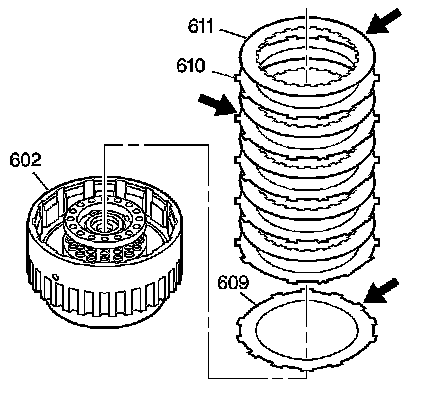

Forward Clutch Assembly Disassemble
Forward Clutch Assembly Disassemble
Tools Required
^ J 23327 Clutch Spring Compressor
^ J 25018-A Clutch Spring Compressor Adapter
1. Remove the direct clutch hub retainer ring (616).
2. Remove the direct clutch hub (615).
3. Remove the direct clutch housing thrust washer (614) (plastic).
4. Remove the forward clutch hub (613).
5. Remove the forward clutch housing thrust washer (612) (bronze). The washer may stick to the forward clutch housing assembly (602).
6. Inspect the direct clutch hub (615) for the following:
^ Spline wear
^ Open lubrication holes
^ A damaged clutch surface

7. Remove the forward clutch steel and composite plates (610, 611).
8. Remove the forward clutch (waved) plate (609).
9. Inspect the forward clutch plates (609-611) for the following:
^ Burning
^ Scoring
^ Flaking
^ Pitting
^ Wear
10. Using the J 23327 and the J 25018-A, compress the forward clutch spring assembly (607).
11. Remove the forward clutch spring retainer ring (608).
12. Remove the tools.
13. Remove the forward clutch spring assembly (607).
14. Inspect the forward clutch spring assembly (607) for collapsed spring coils and distortion.

15. Remove the forward clutch piston assembly (606). The forward clutch piston assembly is reusable if it is not damaged.
16. Inspect the forward clutch piston assembly (606) for cracks.
17. Inspect the seal on the forward clutch piston assembly (606) for cuts, tears, and nicks.
Important: The forward clutch piston intermediate seal assembly (685) is reusable. Replace the forward clutch housing assembly (602) if the seal is worn or damaged.
18. Inspect the forward clutch piston intermediate seal assembly (685) for cuts, tears, and nicks.
19. Inspect the forward clutch housing assembly (602) for the following:
^ Wear
^ Restricted/Clogged oil passages
^ Damaged thrust faces
^ Free movement of checkball (rattles)